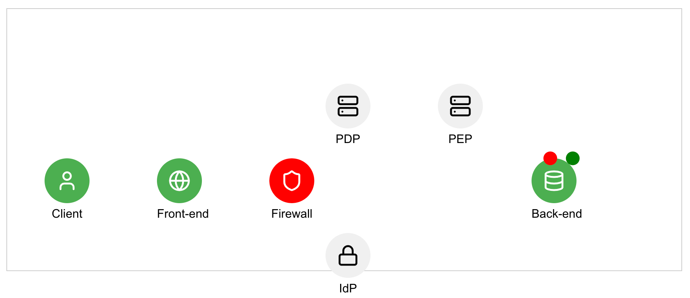

Single Packet Authentication, All Drop Firewall, SDP, PDP, PEP
Zero Trust Architecture Simulation Guide
Introduction
This interactive simulation demonstrates key concepts of Zero Trust Architecture (ZTA) in a simplified environment. By engaging with this simulation, you'll gain hands-on experience with core ZTA principles such as continuous authentication, least privilege access, and dynamic trust determination.

Simulation Overview
The simulation represents a basic Zero Trust environment with the following components:
- Client: Represents the user trying to access resources.
- All-Drop Firewall: Initially blocks all access attempts.
- Software-Defined Perimeter (SDP) Controller: Manages access requests and authentication.
- Policy Decision Point (PDP): Evaluates access policies.
- Identity Provider (IdP): Handles user authentication.
- Policy Enforcement Point (PEP): Enforces access decisions.
- Backend Server: Hosts the sensitive data.
How to Use the Simulation
- Run the Jupyter notebook to start the simulation.
- You'll be presented with a login interface.
- After successful login, you can simulate various user behaviors and attempt to access the backend server.
- Observe how the system responds to different scenarios.
Use Cases
Use Case 1: Standard Login and Access
- Login with username "admin" and password "password123".
- (If asked) MFA will be generated randomly.
- Click "Access Backend Server".
- Observe how the system grants access after verifying your credentials and token.
Use Case 2: Session Expiration
- Login as in Use Case 1.
- Click "Simulate User Behavior" multiple times until you see "Session expired due to token expiration".
- Attempt to log in again and access the backend server.
- Notice how the system requires re-authentication after session expiration.
Use Case 3: Unusual Behavior Detection and MFA
- Login as in Use Case 1.
- Click "Simulate User Behavior" until you see "Unusual behavior detected".
- You'll be logged out and required to provide an MFA code.
- Log in again with the provided MFA code.
- Try accessing the backend server again.
- Observe how the system handles stepped-up authentication in response to unusual behavior.
Use Case 4: Failed Authentication
- Attempt to login with incorrect credentials (e.g., username "user", password "wrongpass").
- Observe how the system denies access and doesn't proceed to the backend server.
Use Case 5: Logout and Re-authentication
- Login successfully.
- Click the "Logout" button.
- Attempt to access the backend server without logging in.
- Notice how the system requires authentication for each new session.
Key Learning Points
- Continuous authentication: The system constantly verifies the user's identity and session validity.
- Least privilege access: Access is granted only after successful authentication and policy evaluation.
- Dynamic trust: Trust is never assumed and is re-evaluated based on user behavior and session state.
- Multi-factor authentication (MFA): Additional authentication factors are required when unusual behavior is detected.
Reflection Questions
- How does this Zero Trust approach differ from traditional perimeter-based security?
- What are the potential benefits and challenges of implementing a Zero Trust Architecture in a real-world scenario?
- How might this basic model be expanded to cover more complex scenarios in enterprise environments?
By exploring these use cases and reflecting on the simulation, you'll gain valuable insights into the principles and operations of Zero Trust Architecture.
# Import Necessary Modules
import random
import time
from datetime import datetime, timedelta
import ipywidgets as widgets
from IPython.display import display, clear_output, HTML
# User session data
user_session = {
'authenticated': False,
'username': None,
'password': None,
'token': None,
'token_expiry': None,
'session_timeout': 300, # 5 minutes
'require_mfa': False,
'mfa_code': None
}
# Output areas
status_output = widgets.Output()
spa_output = widgets.Output()
login_output = widgets.Output()
user_behavior_output = widgets.Output()
# Main container
app_display = widgets.VBox([
status_output,
spa_output,
login_output,
user_behavior_output
])
# Helper Functions for Visibility Management
def show_output(widget):
widget.layout.visibility = 'visible'
def hide_output(widget):
widget.layout.visibility = 'hidden'
# Generate Random MFA Code
def generate_mfa_code():
return ''.join([str(random.randint(0, 9)) for _ in range(6)])
# Logout Function
def logout():
# Clear all outputs
with spa_output:
clear_output(wait=True)
with user_behavior_output:
clear_output(wait=True)
with login_output:
clear_output(wait=True)
with status_output:
clear_output(wait=True)
print("Logged out successfully.")
# Reset user session
user_session.update({
'authenticated': False,
'username': None,
'password': None,
'token': None,
'token_expiry': None,
'require_mfa': False,
'mfa_code': None
})
# Re-display login interface
login_interface()
# Session Termination Function
def session_terminated(reason, keep_require_mfa=False):
# Clear SPA and User Behavior Outputs
with spa_output:
clear_output(wait=True)
with user_behavior_output:
clear_output(wait=True)
# Reset user session except 'require_mfa' if keep_require_mfa is True
user_session.update({
'authenticated': False,
'username': None,
'password': None,
'token': None,
'token_expiry': None
})
if keep_require_mfa:
user_session['require_mfa'] = True
user_session['mfa_code'] = None # Will be generated in login_interface
else:
user_session['require_mfa'] = False
user_session['mfa_code'] = None
# For debugging: print user_session state after termination
with status_output:
clear_output()
print(f"Session terminated: {reason}")
# Re-display login interface with termination message
login_interface(message=reason)
# Login Interface
def login_interface(message=None, keep_message=False):
# Show login_output and hide user_behavior_output
show_output(login_output)
hide_output(user_behavior_output)
# Clear previous contents
with login_output:
clear_output(wait=True)
# Create login fields
username_input = widgets.Text(
placeholder='Enter username',
description='Username:',
disabled=False
)
password_input = widgets.Password(
placeholder='Enter password',
description='Password:',
disabled=False
)
display(username_input, password_input)
# If MFA is required, add MFA input and generate a new MFA code
if user_session['require_mfa']:
user_session['mfa_code'] = generate_mfa_code() # Generate new MFA code
mfa_input = widgets.Text(
placeholder='Enter MFA code',
description='MFA Code:',
disabled=False
)
display(mfa_input)
display(HTML(f"<p>For simulation purposes, use MFA code: {user_session['mfa_code']}</p>"))
else:
mfa_input = None
# Display login button
login_button = widgets.Button(description='Login', button_style='primary')
output = widgets.Output()
display(login_button, output)
# Display termination message if any
if message and not keep_message:
with status_output:
clear_output()
display(HTML(f"<span style='color:red'>{message}</span>"))
elif not keep_message:
with status_output:
clear_output()
# Clear SPA output
with spa_output:
clear_output(wait=True)
# Define Login Button Callback
def on_login_button_clicked(b):
username = username_input.value
password = password_input.value
mfa_code = mfa_input.value if mfa_input else None
user_session['username'] = username
user_session['password'] = password
user_session['entered_mfa'] = mfa_code
with output:
clear_output()
# Always start with the SPA process, regardless of MFA
send_spa_packet()
login_button.on_click(on_login_button_clicked)
# SPA Process Functions
def send_spa_packet():
with spa_output:
clear_output(wait=True)
print("Client: Attempting to access resource.")
time.sleep(1)
with spa_output:
print("All-Drop Firewall: Blocking access attempt.")
time.sleep(1)
with spa_output:
print("Client: Sending SPA packet to firewall.")
time.sleep(1)
firewall_process_spa()
def firewall_process_spa():
with spa_output:
print("Firewall: SPA packet received.")
time.sleep(1)
with spa_output:
print("Firewall: Redirecting client to PDP.")
time.sleep(1)
pdp_evaluate_access()
def pdp_evaluate_access():
with spa_output:
print("PDP: Received request from firewall.")
time.sleep(1)
with spa_output:
print("PDP: Communicating with IdP for user authentication.")
time.sleep(1)
auth_result = idp_authenticate()
pdp_decide_access(auth_result)
def idp_authenticate():
with spa_output:
print("IdP: Verifying user credentials.")
time.sleep(1)
username = user_session['username']
password = user_session['password']
entered_mfa = user_session['entered_mfa']
if username == 'admin' and password == 'password123':
if user_session['require_mfa']:
if entered_mfa == user_session['mfa_code']:
with spa_output:
print("IdP: User authenticated successfully with MFA.")
user_session['token'] = 'valid_token'
user_session['token_expiry'] = datetime.now() + timedelta(minutes=5)
return True
else:
with spa_output:
print("IdP: MFA verification failed.")
return False
else:
with spa_output:
print("IdP: User authenticated successfully.")
user_session['token'] = 'valid_token'
user_session['token_expiry'] = datetime.now() + timedelta(minutes=5)
return True
else:
with spa_output:
print("IdP: User authentication failed.")
return False
def pdp_decide_access(auth_result):
if auth_result:
with spa_output:
print("PDP: Authentication successful. Evaluating access policy.")
time.sleep(1)
# Here you could add additional policy checks if needed
with spa_output:
print("PDP: Access granted. Informing PEP to open port.")
time.sleep(1)
# Clear status_output to remove any residual messages
with status_output:
clear_output()
pep_open_port()
else:
with spa_output:
print("PDP: Authentication failed. Access denied.")
time.sleep(1)
with spa_output:
print("Client: Access denied. Cannot proceed.")
time.sleep(1)
# Display authentication failure message
with status_output:
clear_output()
display(HTML("<span style='color:red'>Authentication failed. Please try again.</span>"))
# Re-display login interface without clearing the error message
login_interface(keep_message=True)
def pep_open_port():
with spa_output:
print("PEP: Opening port for client.")
# Transition to user behavior interface
user_behavior_interface()
def client_send_request():
with spa_output:
print("Client: Sending request to backend server.")
time.sleep(1)
with spa_output:
print("BE Server: Verifying token.")
time.sleep(1)
if user_session.get('token') == 'valid_token' and datetime.now() < user_session.get('token_expiry', datetime.min):
with spa_output:
print("BE Server: Token valid. Accessing sensitive data.")
print("\nAccess Granted:\nSensitive data from backend server.")
with status_output:
clear_output()
print("Access to sensitive data granted.")
else:
with spa_output:
print("BE Server: Invalid token. Access denied.")
print("Client: Access denied. Cannot access backend server.")
with status_output:
clear_output()
print("Access denied due to invalid token.")
# User Behavior Interface
def user_behavior_interface():
# Show User Behavior Output and Hide Login Output
show_output(user_behavior_output)
hide_output(login_output)
# Clear previous contents
with user_behavior_output:
clear_output(wait=True)
# Display user behavior buttons
simulate_button = widgets.Button(description='Simulate User Behavior', button_style='info')
access_button = widgets.Button(description='Access Backend Server', button_style='success')
logout_button = widgets.Button(description='Logout', button_style='danger')
# Define Button Callbacks
def on_simulate_button_clicked(b):
simulate_user_behavior()
def on_access_button_clicked(b):
client_send_request()
def on_logout_button_clicked(b):
logout()
simulate_button.on_click(on_simulate_button_clicked)
access_button.on_click(on_access_button_clicked)
logout_button.on_click(on_logout_button_clicked)
# Display Buttons Horizontally
display(widgets.HBox([simulate_button, access_button, logout_button]))
# Clear status_output
with status_output:
clear_output()
# SPA trace remains visible
# User Behavior Simulation
def simulate_user_behavior():
with status_output:
clear_output()
state = random.choice(['still_valid', 'token_expired', 'unusual_behavior'])
if state == 'still_valid':
display(HTML("<p style='color:green'>Simulated user state: still_valid</p>"))
display(HTML("<p style='color:green'>User behavior is normal. Session continues.</p>"))
elif state == 'token_expired':
print(f"Simulated user state: {state}")
print("User token has expired. Please log in again.")
user_session['token_expiry'] = datetime.now() - timedelta(seconds=1)
session_terminated("Session expired due to token expiration.")
elif state == 'unusual_behavior':
print(f"Simulated user state: {state}")
print("Unusual behavior detected. Please log in again.")
user_session.update({
'authenticated': False,
'token': None,
'token_expiry': None,
'require_mfa': True,
'mfa_code': None # Set to None, will be generated in login_interface
})
session_terminated("Session terminated due to unusual behavior.", keep_require_mfa=True)
# For debugging: print user_session after simulating behavior
print(f"DEBUG: user_session after simulating behavior = {user_session}")
# Run the Lab
def run_lab():
# Initially, show login_output and hide user_behavior_output
show_output(login_output)
hide_output(user_behavior_output)
# Display the main container
display(app_display)
# Initialize login interface
login_interface()
run_lab()